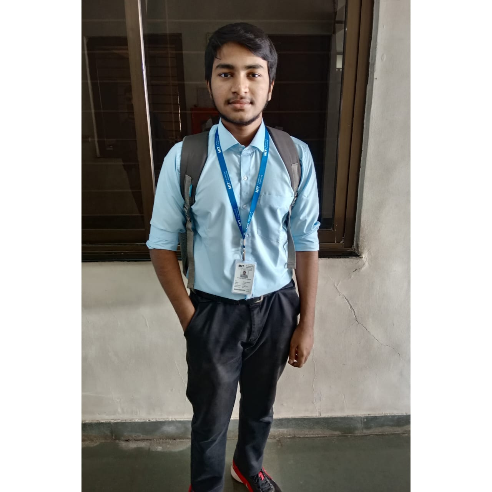

Hello, I'm Pritam Tatkari
Web Developer
I'm a passionate beginner web developer focused on creating clean, responsive websites. Welcome to my portfolio!


I'm a passionate beginner web developer focused on creating clean, responsive websites. Welcome to my portfolio!
Hi there! I'm Pritam, a beginner web developer with a passion for creating beautiful, functional websites. I recently started my journey in web development and I'm constantly learning new technologies and techniques to improve my skills.
My background in problem-solving and attention to detail helps me create websites that not only look good but also provide a great user experience. I'm excited about the opportunity to work on projects that challenge me and help me grow as a developer.
When I'm not coding, you can find me exploring new technologies, reading tech blogs, or contributing to open-source projects.